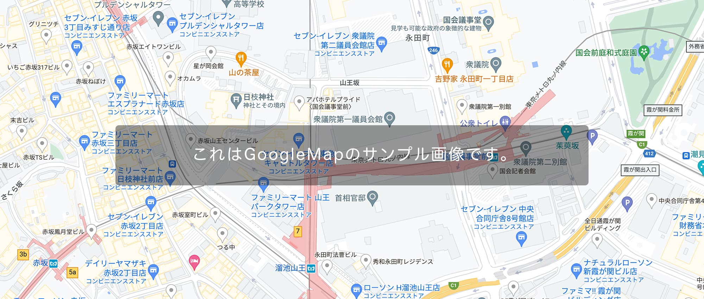

東京都XX様宅
ここに説明を入れます。サンプルテキスト。
| 見出し | ここに説明など入れて下さい。サンプルテキスト。 |
|---|---|
| 見出し | ここに説明など入れて下さい。サンプルテキスト。 |
| 見出し | ここに説明など入れて下さい。サンプルテキスト。 |
| 見出し | ここに説明など入れて下さい。サンプルテキスト。 |
| 所在地 | Google Mapで地図を埋め込みたい場合はマニュアルをご覧下さい。  |
画像加工やテンプレートの編集方法、無料サーバーを使ってサイトを公開するなど動画をまじえてわかりやすく解説しています。
初心者向けマニュアルはこちら。
titleタグの設定はとても重要です。念入りにワードを選んで適切に入力しましょう。
まず、htmlソースが見れる状態にして、
<title>ハウスメーカー・工務店向け無料ホームページテンプレート tp_housebuilder1</title>
を編集しましょう。
あなたのホームページ名が「SAMPLE HOME」だとすれば、
<title>SAMPLE HOME</title>
とすればＯＫです。SEO対策もするなら冒頭に重要なワードを入れておきましょう。
copyrightを変更しましょう。
続いてhtmlの下の方にある、
Copyright© SAMPLE HOME All Rights Reserved.
の部分もあなたのサイト名に変更します。
metaタグを変更しましょう。
htmlソースが見える状態にしてmetaタグを変更しましょう。
ソースの上の方に、
content="ここにサイト説明を入れます"
という部分がありますので、テキストをサイトの説明文に入れ替えます。検索結果の文面に使われる場合もありますので、見た人が来訪したくなるような説明文を簡潔に書きましょう。
h1ロゴのaltタグも変更しましょう。
html側に、
alt="SAMPLE HOME"
となっている箇所があるので、この部分もあなたのサイト名に変更しましょう。
ロゴ画像は、生成AIで出力されたもので、DECORUTO（現在はロゴサイトとして運営中）で無料配布しております。
ご利用になられたい場合はそちらの利用規約をご一読の上でご活用下さい。
imagesフォルダに入っていない画像（アイコン）は全てFont Awesomeの素材です。
Font Awesome 公式サイト
Font Awesome アイコン一覧
iタグを使ってhtmlに直接アイコンを読み込む場合と、cssの擬似要素を使って読み込む場合があります。
それぞれ他のアイコンに置き換えたい場合は、当サイトのマニュアルをお読み下さい。
Font Awesomeを使う為に必要なタグ、ファイル類。
cssフォルダのstyle.css冒頭で読み込んでいる「Font Awesomeの読み込み」のブロック。
何年も経過した場合、動作に問題が出てくる可能性があります。
テンプレートを編集していないのに突然動きがおかしくなった場合は、style.cssの冒頭でCDNから読み込んでいるFont Awesome関連のファイルのバージョンを変更して動作するか確認してみて下さい。
AI出力されたものを梱包していますのでそのまま再利用頂いても構いませんが著作は当サイトにあります。
このテンプレートの公開時点では、AIサイトによると「著作は作り出した人のもの」（＝当サイト）という規約になっているようです。
AI出力でないリアルな画像に入れ替えたい場合は写真ACさん（無料写真サイト）がおすすめです。
トップページのスライドショーには、vegasを使用しています。
テンプレート内の解説及び、当サイト上でのマニュアル以外のサポートは基本的には行なっておりませんので、使いこなしたい方はGoogle検索などかけてみて下さい。
vegas 公式サイト：https://vegas.jaysalvat.com/
オプション一覧：https://vegas.jaysalvat.com/documentation/settings/
トランジション一覧：https://vegas.jaysalvat.com/documentation/transitions/
上記の「トランジション一覧」で、色々なスライドショーのパターンを見る事ができます。お好みで設定を変更してみて下さい。jsフォルダのvegas.jsの値を変更するだけです。
画像を入れ替える場合や、枚数を変更したい場合。
画像を入れ替えたい場合は、imagesフォルダの1.jpg〜3.jpgを上書きして下さい。
枚数を変更する場合や画像ファイル名を変更する場合は、jsフォルダのvegas.jsを開いて編集して下さい。枚数追加は、既存の画像読み込み行をコピペして画像ファイル名を入れ替えるだけでOKです。
20:9の比率の背景画像をレスポンシブ化しています
サンプルテンプレートでは、20:9の画像がレスポンシブになるようcssで設定されています。
他の比率でも問題なく表示されますが、部分的に切り抜かれるので、20:9以外の比率の画像を全部表示させたければ以下を調整して下さい。
cssフォルダのstyle.cssの、
#mainimg-box {
の中にある、
padding-top: 45%;
を調整します。45というのは、9÷20=45%の事です。
もし、2:1の画像を使いたければ、1÷2=50%
padding-top: 50%;
と書き直せばOKです。
vegasを使う為に必要なタグ、ファイル類。
1. html冒頭のhead内にある「vegas.min.css」の読み込みの１行。
2. htmlにある「スライドショー」のブロック。
3. html下部にある「jQueryの読み込み」のブロック。※下のjsファイルより先に読み込んで下さい。
4. その下の「スライドショー（vegas）」のブロック。
5. jsフォルダ内の「vegas.js」。
何年も経過した場合、動作に問題が出てくる可能性があります。
テンプレートを編集していないのに突然動きがおかしくなった場合は、CDNから読み込んでいるjQueryのバージョン及びvegas関連のファイルのバージョンを変更して動作するか確認してみて下さい。
画面幅が900px未満で、メインメニューが開閉ブロックタイプになります。
この数値を変更したい場合は、jsフォルダのmain.jsの、
if(window.innerWidth < 900)
の、900の数値を変更して下さい。
アイコン内のテキストはhtml側で直接入力されていますので必要に応じて編集して下さい。
背景色は、cssフォルダのstyle.cssの、
#new dt span
や、
#new dt span.icon-bg1
のbackgroundでそれぞれ変更できます。
新しいアイコンを追加したい場合、上記の「#new dt span.icon-bg1」ブロックをコピペし、.icon-bg1部分を.icon-bg2などに変更し、backgroundに好きな色を設定します。
後はhtml側で、
<span class="icon-bg2">〜〜〜</span>
などとすればOKです。
尚、あまり文字数が増えるとレイアウトが崩れるので注意して下さい。
サイトの全体的な文字サイズを変更したい場合は、cssフォルダのsytle.css冒頭にある、
html,body {
の中にある「font-size」で行って下さい。端末サイズ別で２箇所あります。
上記以外に（文字サイズ以外でも）、remという単位が多く使われていますが、それは上の「html,body」の「font-size」に対してのサイズ指定になります。
もし、html,bodyが16pxの場合、2remと指定していれば32pxの事。0.5remと指定していれば8pxの事になります。
remの他、emという単位もありますが、それは親要素に対してのサイズ指定です。
特に理由がない場合はremを使うと直感的に操作できるかと思います。
以下のような出現のアニメーションサンプルをsample_inview.htmlにまとめています。
好きなアニメーションに簡単に変更できますし、オリジナルのものを作る事もできます。
以下は「よく頂く質問」を仮定してサンプルを用意していますが汎用的な開閉ブロックなので、基本的にはどこにでも使えます。
クリック対象としたいブロックにclass="openclose"とつければ、続く要素が自動的に開閉ブロックになります。
もしすでにclass指定がある場合は、半角スペースで区切って追加すればOKです。
例：class="sample openclose"